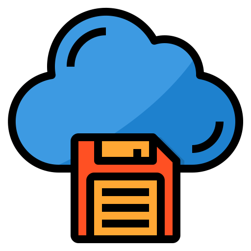
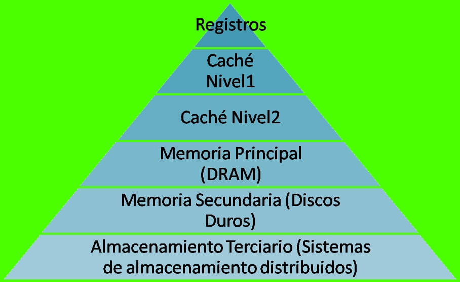
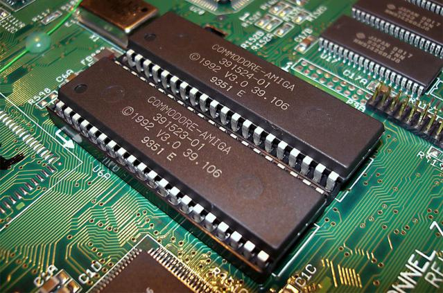
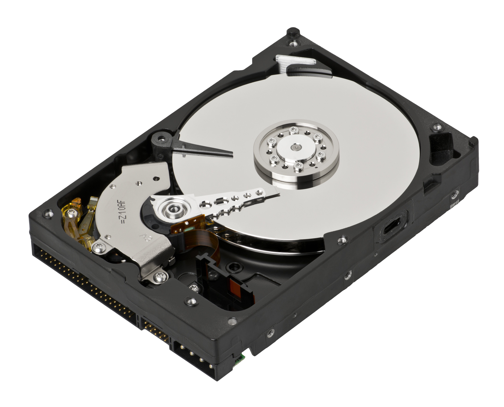
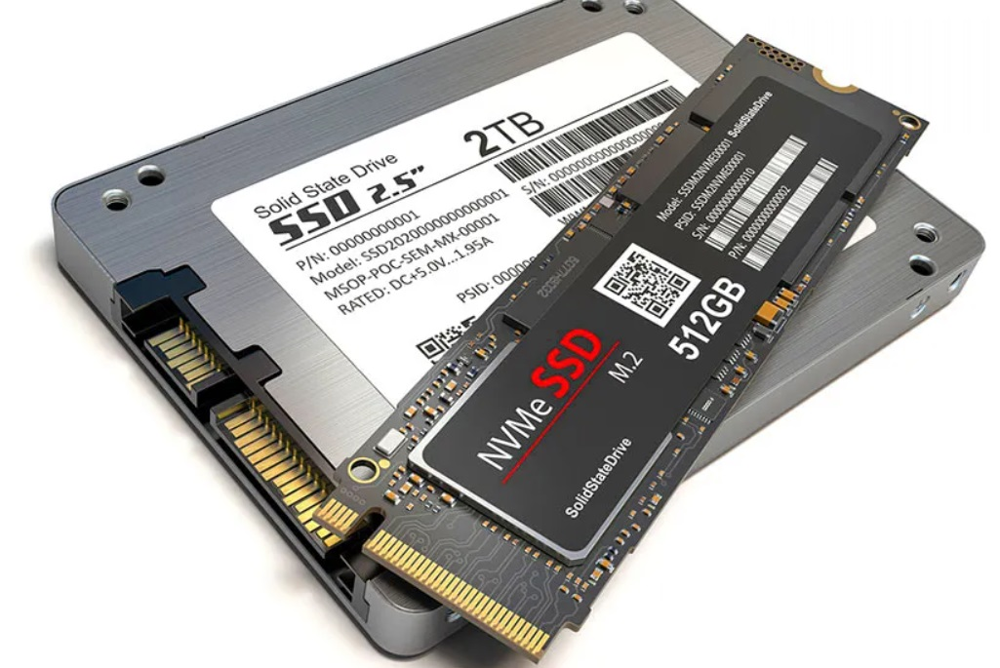
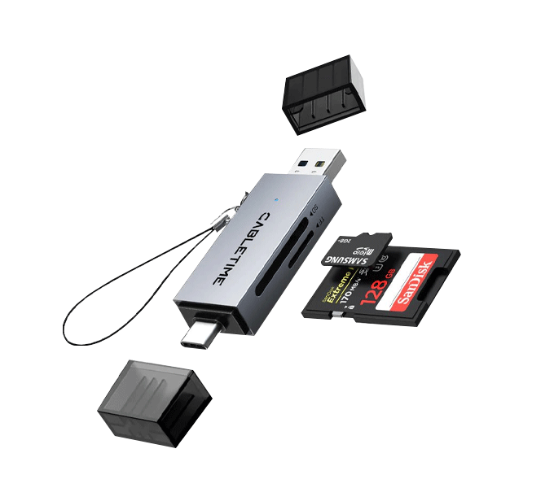

ISEMED
Área de Informática
Área de Informática
Informática I.
Décimo Grado (I BTP) Sección "A"
Docente: Pablo Antonio Peña.
Fecha: 20 de Julio de 2025.
Comprender los conceptos fundamentales del tema.
Aplicar los conocimientos en casos prácticos.
La capacidad de almacenar y recuperar información es crucial para las computadoras.

Diferentes tipos de memoria y almacenamiento, organizados por velocidad, capacidad y costo.

Almacena instrucciones básicas y esenciales para el arranque del sistema.

Almacenamiento magnético con platos giratorios.

Almacenamiento basado en memoria flash, sin partes móviles.


Almacenamiento de datos en servidores remotos vía Internet.
Pregunta interactiva 1 vinculada a QuizPro.
Pregunta interactiva 2 vinculada a QuizPro.
Pregunta interactiva 3 vinculada a QuizPro.
Pregunta interactiva 4 vinculada a QuizPro.
Pregunta interactiva 5 vinculada a QuizPro.
Responde estas preguntas en el módulo de actividades
Pregunta interactiva 1 vinculada a QuizPro.
Pregunta interactiva 2 vinculada a QuizPro.
Pregunta interactiva 3 vinculada a QuizPro.
Pregunta interactiva 4 vinculada a QuizPro.
Pregunta interactiva 5 vinculada a QuizPro.
Responde estas preguntas en el módulo de actividades
Puntos clave para el estudio:
• Conceptos base dominados.
• Metodologías identificadas.
• Aplicaciones prácticas comprendidas.
Realiza un mapa conceptual sobre el tema visto hoy. Valor: 5%. Fecha: Próxima clase.
Concepto A
Definición clave para el examen parcial.
Concepto B
Término técnico fundamental del área.
¡Gracias por tu atención! Sistema ISEMED - Área de Informática.